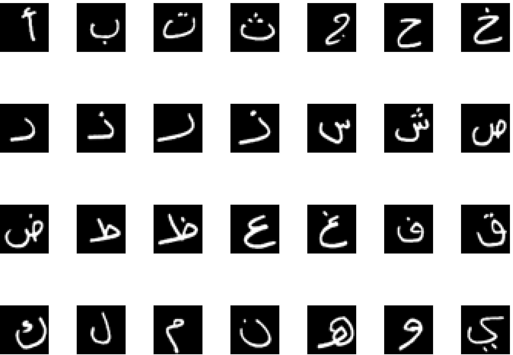

Arabic Handwritten Characters Dataset
Abstract
Handwritten Arabic character recognition systems face several challenges, including the unlimited variation in human handwriting and large public databases. In this work, we model a deep learning architecture that can be effectively apply to recognizing Arabic handwritten characters. A Convolutional Neural Network (CNN) is a special type of feed-forward multilayer trained in supervised mode. The CNN trained and tested our database that contain 16800 of handwritten Arabic characters. In this paper, the optimization methods implemented to increase the performance of CNN. Common machine learning methods usually apply a combination of feature extractor and trainable classifier. The use of CNN leads to significant improvements across different machine-learning classification algorithms. Our proposed CNN is giving an average 5.1% misclassification error on testing data.
Dataset
Download dataset from Kaggle
Reference
Ahmed El-Sawy, Mohamed Loey, Hazem EL-Bakry, Arabic Handwritten Characters Recognition using Convolutional Neural Network, WSEAS, 2017 Our proposed CNN is giving an average 5.1% misclassification error on testing data. Download